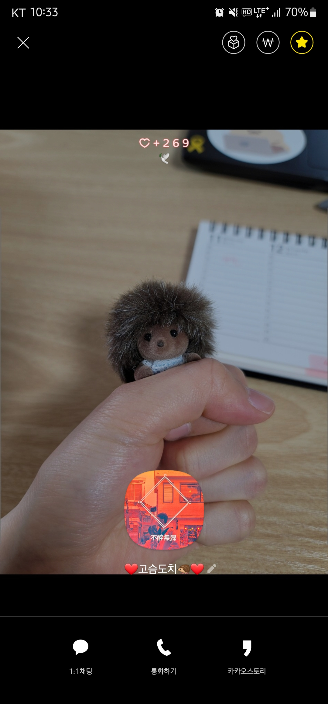
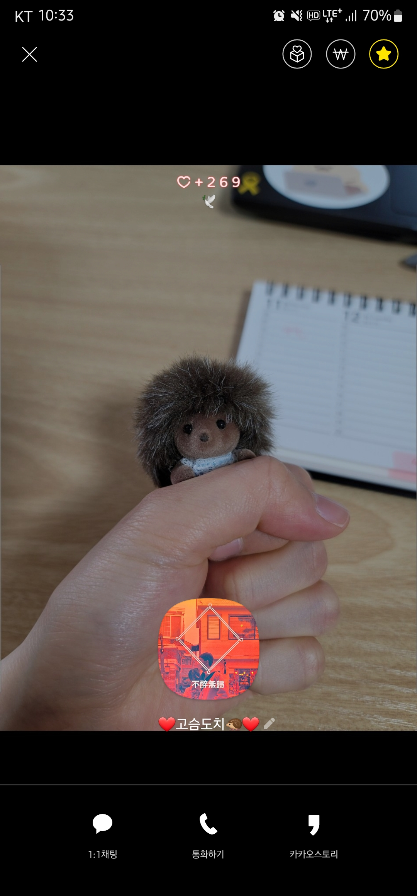

일기장

2022.5.16 오늘 오빠가 아침에 카톡 프사를 바꿔서 서운했다. 내 모습이 제대로 나온
사진을 했으면 좋겠는데 내 얼굴이 거의 나오지도 않고 이전 사진도 없애버려서
그냥 좀 서운하다.. 난 티내는걸 좋아해서 그런가 온통 오빠 사진인데..

2022.5.16 오늘 오빠가 아침에 카톡 프사를 바꿔서 서운했다. 내 모습이 제대로 나온
사진을 했으면 좋겠는데 내 얼굴이 거의 나오지도 않고 이전 사진도 없애버려서
그냥 좀 서운하다.. 난 티내는걸 좋아해서 그런가 온통 오빠 사진인데..